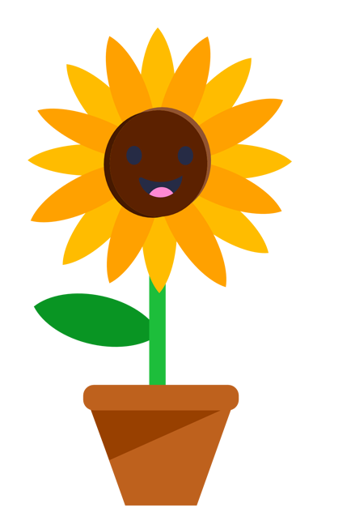
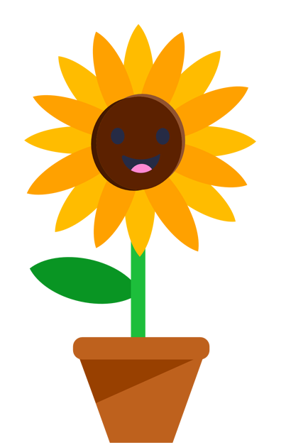

I'm Danielle.
a web developer.


I am a fullstack Web Developer. I am an alumni of University of Texas at Dallas. I got my Bachelor's in Computer Science in December 2018. While studying Computer Science, I discovered a passion in Web Development. I have always loved solving problems and puzzles as well as crafting and creating art.
I have always loved solving problems and puzzles as well as crafting and creating art. One of my favorite parts of Website Development is the design process. That process allows me to use my creative side while still using my knowledge and skills.
Ever since I could pick up a brush I have loved painting! Painting is an amazing way to get creative juices flowing while relaxing. In my freetime from work I like to paint landscapes. I find it relaxing to paint the world around me from my perspective.